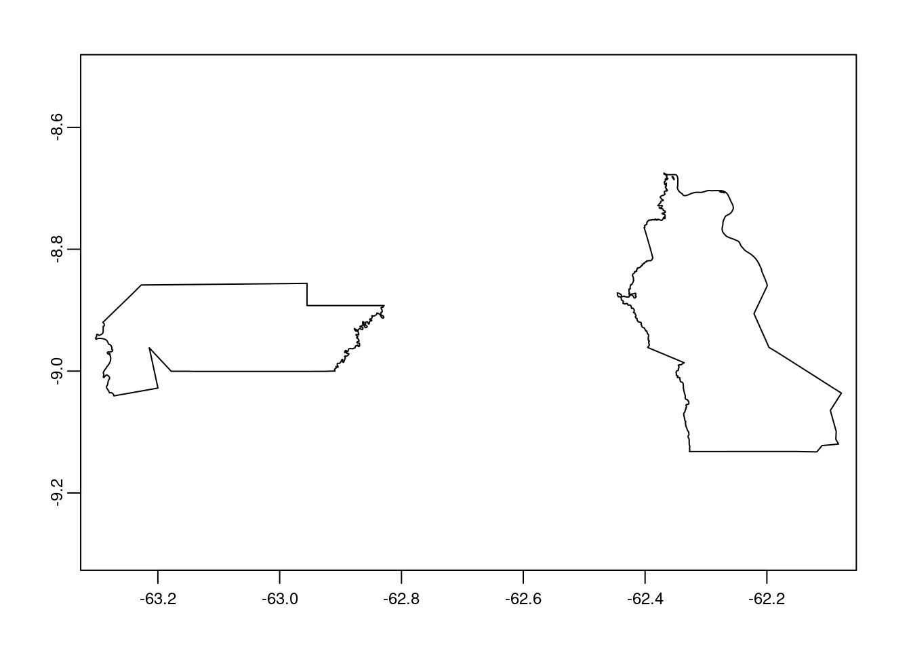
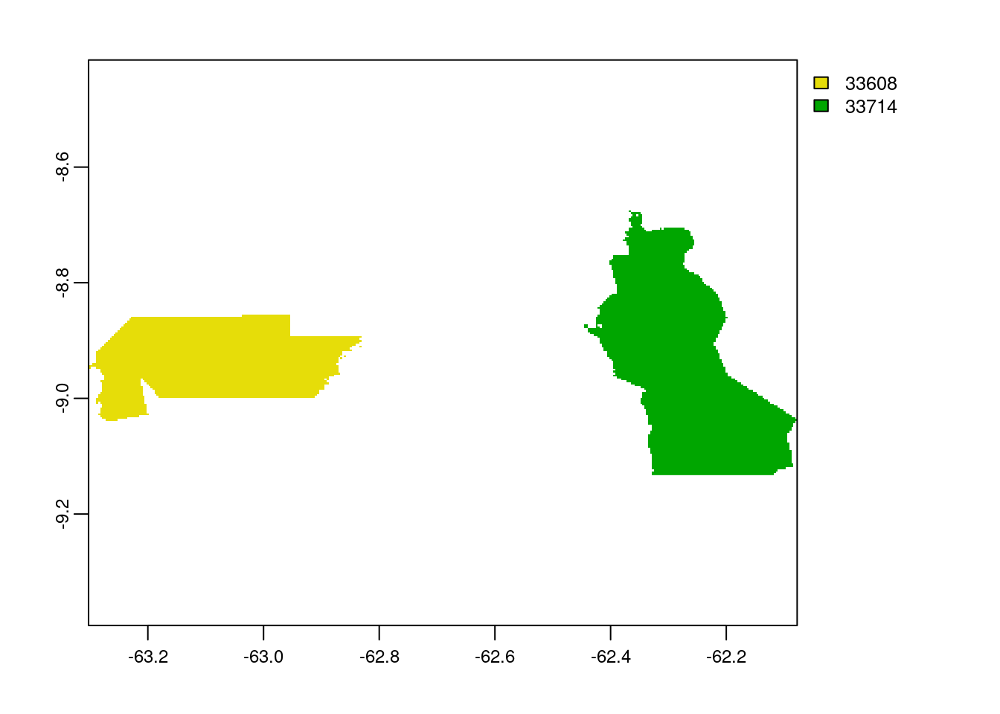

Last updated: 2021-03-05
Checks: 6 1
Knit directory: mapme.protectedareas/
This reproducible R Markdown analysis was created with workflowr (version 1.6.2). The Checks tab describes the reproducibility checks that were applied when the results were created. The Past versions tab lists the development history.
The R Markdown is untracked by Git. To know which version of the R Markdown file created these results, you’ll want to first commit it to the Git repo. If you’re still working on the analysis, you can ignore this warning. When you’re finished, you can run wflow_publish to commit the R Markdown file and build the HTML.
Great job! The global environment was empty. Objects defined in the global environment can affect the analysis in your R Markdown file in unknown ways. For reproduciblity it’s best to always run the code in an empty environment.
The command set.seed(20210305) was run prior to running the code in the R Markdown file. Setting a seed ensures that any results that rely on randomness, e.g. subsampling or permutations, are reproducible.
Great job! Recording the operating system, R version, and package versions is critical for reproducibility.
Nice! There were no cached chunks for this analysis, so you can be confident that you successfully produced the results during this run.
Great job! Using relative paths to the files within your workflowr project makes it easier to run your code on other machines.
Great! You are using Git for version control. Tracking code development and connecting the code version to the results is critical for reproducibility.
The results in this page were generated with repository version 28fb9d5. See the Past versions tab to see a history of the changes made to the R Markdown and HTML files.
Note that you need to be careful to ensure that all relevant files for the analysis have been committed to Git prior to generating the results (you can use wflow_publish or wflow_git_commit). workflowr only checks the R Markdown file, but you know if there are other scripts or data files that it depends on. Below is the status of the Git repository when the results were generated:
Ignored files:
Ignored: .Rproj.user/
Ignored: mapme.protectedareas.Rproj
Ignored: renv/library/
Ignored: renv/staging/
Untracked files:
Untracked: analysis/carbon-flux.rmd
Unstaged changes:
Modified: analysis/index.Rmd
Note that any generated files, e.g. HTML, png, CSS, etc., are not included in this status report because it is ok for generated content to have uncommitted changes.
There are no past versions. Publish this analysis with wflow_publish() to start tracking its development.
# load required libraries
library(terra)terra version 1.0.10library(raster)Loading required package: splibrary(rgdal)rgdal: version: 1.5-23, (SVN revision 1121)
Geospatial Data Abstraction Library extensions to R successfully loaded
Loaded GDAL runtime: GDAL 3.0.4, released 2020/01/28
Path to GDAL shared files: /usr/share/gdal
GDAL binary built with GEOS: TRUE
Loaded PROJ runtime: Rel. 6.3.1, February 10th, 2020, [PJ_VERSION: 631]
Path to PROJ shared files: /usr/share/proj
Linking to sp version:1.4-5
To mute warnings of possible GDAL/OSR exportToProj4() degradation,
use options("rgdal_show_exportToProj4_warnings"="none") before loading rgdal.
Attaching package: 'rgdal'The following object is masked from 'package:terra':
projectlibrary(tmap)
library(sf)Linking to GEOS 3.8.0, GDAL 3.0.4, PROJ 6.3.1Forest Carbon Emissions are GHG emissions that originate from forest cover loss and subsequent ABG and BEG biomass loss. Net forest carbon flux represents the net exchange of carbon between forests and the atmosphere. Forest act as both a Source and Sink for Carbon.
In order to calculate net carbon flux or simply carbon balance, we need to follow these steps: - Download raster r1 of the desired grid - Clip extent of raster to AOI polygon to create new raster r2 - Rasterize WDPA vector polygon v1 to the extent of r2 to get r3 - Load r2 (base raster layer) and r3 (raster zone layer) - Perform Zonal Statistics between r2 and r3
# load raster from file - here we have used raster data from Amazonas state of Brazil
zone_ras <- raster("/home/rstudio/shared/Om/test/Zone_Stats.tif")
crs(zone_ras) <- "+proj=utm +zone=48 +datum=WGS84"
zone_rasclass : RasterLayer
dimensions : 1832, 4900, 8976800 (nrow, ncol, ncell)
resolution : 0.00025, 0.00025 (x, y)
extent : -63.3025, -62.0775, -9.13275, -8.67475 (xmin, xmax, ymin, ymax)
crs : +proj=utm +zone=48 +datum=WGS84 +units=m +no_defs
source : /home/rstudio/shared/Om/test/Zone_Stats.tif
names : Zone_Stats # load your vector from file - this vector contains wdpa polygons with ID 33608 & 33714
amz <- vect(read_sf("/home/rstudio/shared/Om/test/Amazonas.shp"))
crs(amz) <- "+proj=utm +zone=48 +datum=WGS84"
plot(amz)
# create raster `raster_amz` to match the extent from raster files
raster_amz <- rast(ncol=4900, nrow=1832, xmin=-63.3025, xmax=-62.0775, ymin=-9.13275, ymax=-8.67475)
# set the crs to UTM Zone 48 - WGS84
crs(raster_amz) <- "+proj=utm +zone=48 +datum=WGS84"
# check data
raster_amzclass : SpatRaster
dimensions : 1832, 4900, 1 (nrow, ncol, nlyr)
resolution : 0.00025, 0.00025 (x, y)
extent : -63.3025, -62.0775, -9.13275, -8.67475 (xmin, xmax, ymin, ymax)
coord. ref. : +proj=utm +zone=48 +datum=WGS84 +units=m +no_defs # since the extent of both rasters match now we can perform rasterization
x <- rasterize(amz, raster_amz, amz$WDPAID, length, background=NA, update=FALSE, touches=is.lines(amz), cover=FALSE, filename="/home/rstudio/shared/Om/test/amaz_raster.tif")
# check data
xclass : SpatRaster
dimensions : 1832, 4900, 1 (nrow, ncol, nlyr)
resolution : 0.00025, 0.00025 (x, y)
extent : -63.3025, -62.0775, -9.13275, -8.67475 (xmin, xmax, ymin, ymax)
coord. ref. : +proj=utm +zone=48 +datum=WGS84 +units=m +no_defs
source : amaz_raster.tif
name : value
min value : 33608
max value : 33714 # plot rasterized map
plot(x)
# load rasterized data
x1 <- raster("/home/rstudio/shared/Om/test/amaz_raster.tif")
#check data
x1class : RasterLayer
dimensions : 1832, 4900, 8976800 (nrow, ncol, ncell)
resolution : 0.00025, 0.00025 (x, y)
extent : -63.3025, -62.0775, -9.13275, -8.67475 (xmin, xmax, ymin, ymax)
crs : +proj=utm +zone=48 +datum=WGS84 +units=m +no_defs
source : /home/rstudio/shared/Om/test/amaz_raster.tif
names : amaz_raster
values : 33608, 33714 (min, max)# perform zonal statistics
statsZone <- zonal(zone_ras, x1, fun='sum', na.rm=T)
statsZone zone sum
[1,] 33608 -28333590
[2,] 33714 38159593
[3,] NaN 0
sessionInfo()R version 4.0.3 (2020-10-10)
Platform: x86_64-pc-linux-gnu (64-bit)
Running under: Ubuntu 20.04 LTS
Matrix products: default
BLAS/LAPACK: /usr/lib/x86_64-linux-gnu/openblas-pthread/libopenblasp-r0.3.8.so
locale:
[1] LC_CTYPE=en_US.UTF-8 LC_NUMERIC=C
[3] LC_TIME=en_US.UTF-8 LC_COLLATE=en_US.UTF-8
[5] LC_MONETARY=en_US.UTF-8 LC_MESSAGES=C
[7] LC_PAPER=en_US.UTF-8 LC_NAME=C
[9] LC_ADDRESS=C LC_TELEPHONE=C
[11] LC_MEASUREMENT=en_US.UTF-8 LC_IDENTIFICATION=C
attached base packages:
[1] stats graphics grDevices utils datasets methods base
other attached packages:
[1] sf_0.9-7 tmap_3.3 rgdal_1.5-23 raster_3.4-5 sp_1.4-5
[6] terra_1.0-10
loaded via a namespace (and not attached):
[1] Rcpp_1.0.6 lattice_0.20-41 png_0.1-7 class_7.3-17
[5] rprojroot_2.0.2 digest_0.6.27 utf8_1.1.4 R6_2.5.0
[9] evaluate_0.14 e1071_1.7-4 highr_0.8 pillar_1.5.0
[13] rlang_0.4.10 jquerylib_0.1.3 rmarkdown_2.7 stringr_1.4.0
[17] htmlwidgets_1.5.3 compiler_4.0.3 httpuv_1.5.5 xfun_0.21
[21] pkgconfig_2.0.3 tmaptools_3.1-1 base64enc_0.1-3 htmltools_0.5.1.1
[25] tidyselect_1.1.0 tibble_3.1.0 workflowr_1.6.2 codetools_0.2-16
[29] XML_3.99-0.5 fansi_0.4.2 viridisLite_0.3.0 crayon_1.4.1
[33] dplyr_1.0.2 later_1.1.0.1 grid_4.0.3 jsonlite_1.7.2
[37] lwgeom_0.2-5 lifecycle_1.0.0 DBI_1.1.1 git2r_0.28.0
[41] magrittr_2.0.1 units_0.7-0 KernSmooth_2.23-17 stringi_1.5.3
[45] fs_1.5.0 promises_1.2.0.1 leafsync_0.1.0 leaflet_2.0.4.1
[49] bslib_0.2.4 ellipsis_0.3.1 generics_0.1.0 vctrs_0.3.6
[53] RColorBrewer_1.1-2 tools_4.0.3 dichromat_2.0-0 leafem_0.1.3
[57] glue_1.4.2 purrr_0.3.4 crosstalk_1.1.1 abind_1.4-5
[61] parallel_4.0.3 yaml_2.2.1 stars_0.5-1 classInt_0.4-3
[65] knitr_1.31 sass_0.3.1